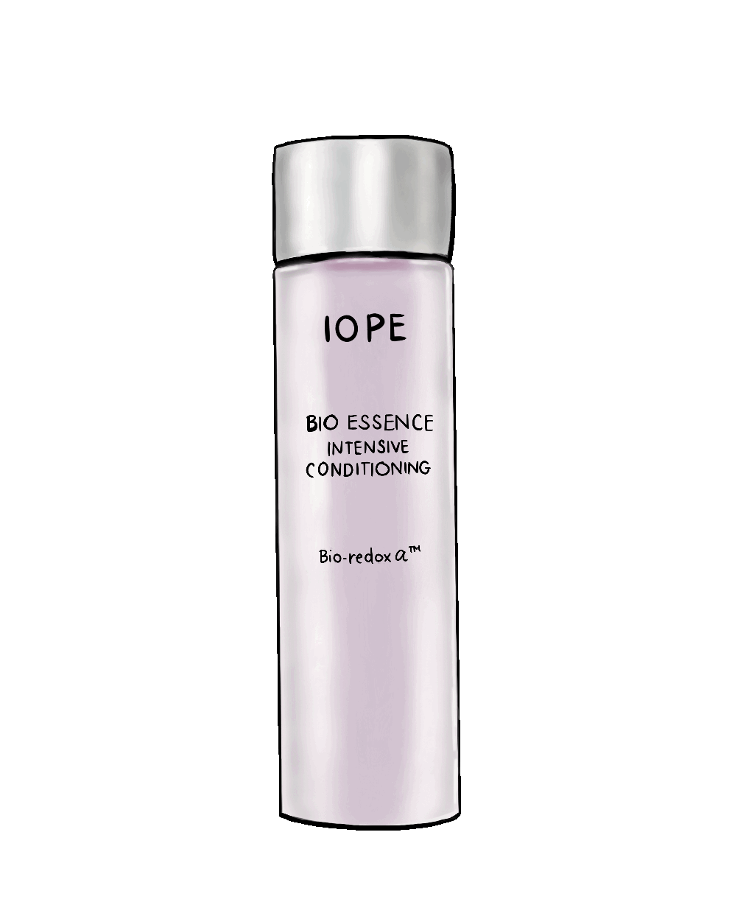

Step 1
Use a foam cleanser.
Lather in hands then massage face for 30 seconds.
Rinse with warm water then gently pat-dry face with towel

Step 2
Use a toner to rebalance out pH levels of the face. Toner helps to absorb the next applied products.
Take a cotton pad and use upward motion.
Take a cotton pad and use upward motion.

Step 3
Then take an essense to hydrate the skin.
Bonus step for dehydrated skin.

Bonus step for dehydrated skin.
Step 4
Use eyecream to hydrate and minimize dark cirlces and puffiness. Gently tap using pinkie or ring finger under the eye.

Step 5
Use moisturizer for your skintype lock in moisture and ingredients from previous products.

Step 6
Wear sunscreen to protect skin from damaging UV rays on a daily basis. This will prevent premature aging, dark spots, wrinkles, and other fine lines.